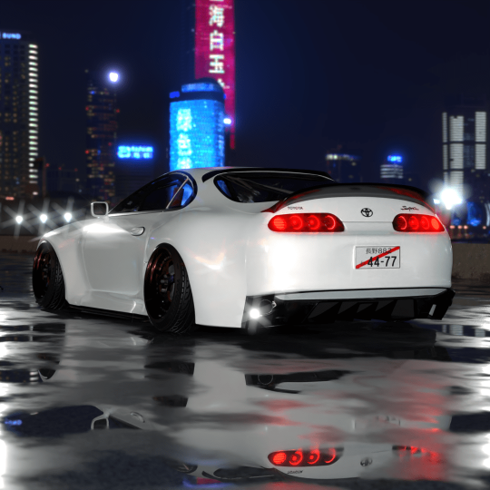

JDM-Japanese domestic market
For many years now, the Land of the Cherry Blossom has been associated around the world with extraordinary technological advancement. This is where the great electronic consortiums originate. We watch television on Japanese televisions, we store food in refrigerators from this country and we drive Japanese cars. The rich history of the Japanese automotive industry, combined with a culture that is exotic to Europeans, means that today cars from this Asian country are particularly interesting and enjoy a good reputation among users. In the following sections you can see what Japanese classics look like after modification! As we all know, without curiosity there is no wisdom, so let's get started!
Use the menu above to find pictures and videos of the most interesting models!